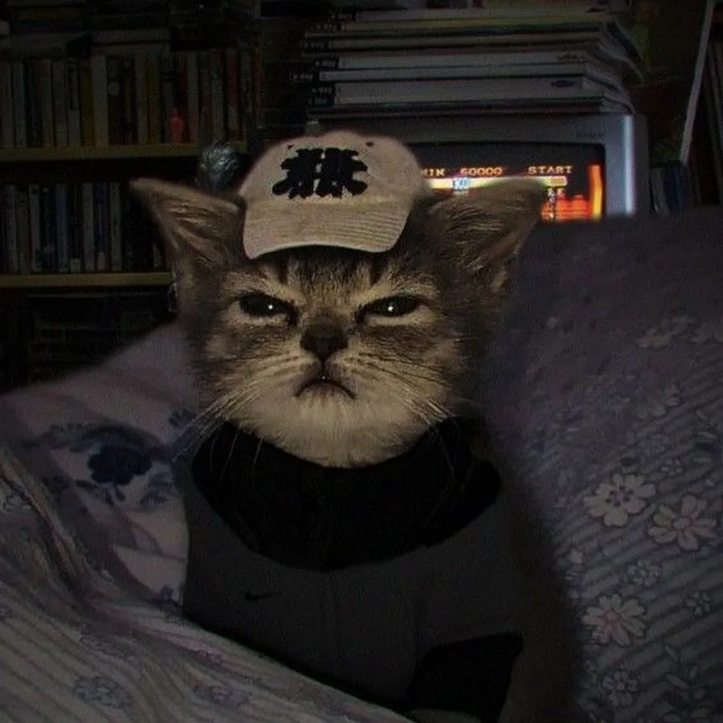
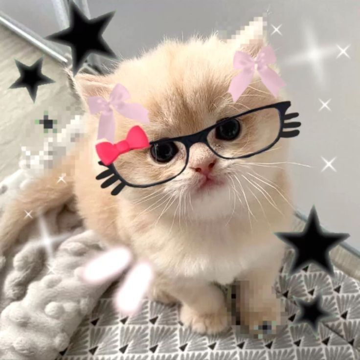

АРХИВ СВИДЕТЕЛЬСТВ



> ОБНАРУЖЕНО СОБЫТИЕ: ДЕНЬ РОЖДЕНИЯ
> ДЛЯ ДОСТУПА ТРЕБУЕТСЯ КЛЮЧ
Кодовое имя: Солнышко. Объект излучает положительные вибрации.
Впервые замечен: 19.03.2005. С тех пор фиксируется постоянный рост ее крутости.
Локация повышенной активности: Кофейни и книжные магазины.
Источник энергии: Раф-кофе и суши.
Характерный признак: Неподражаемая улыбка. Зафиксировать и беречь.
"Анна - самый светлый человек в моей жизни! Помни нашу первую встречу в университете?"
"С днём рождения! Ты делаешь мир лучше просто своим присутствием. Горжусь тобой!"
"19 лет - это только начало! Желаю тебе самых безумных приключений и настоящей любви!"
САМЫМ ЯРКИМ, ДОБРЫМ И УДИВИТЕЛЬНЫМ СОБЫТИЕМ ЭТОГО ГОДА.
ВЕРДИКТ: ЛЮБИТЬ И ЦЕНИТЬ. ВСЕГДА.